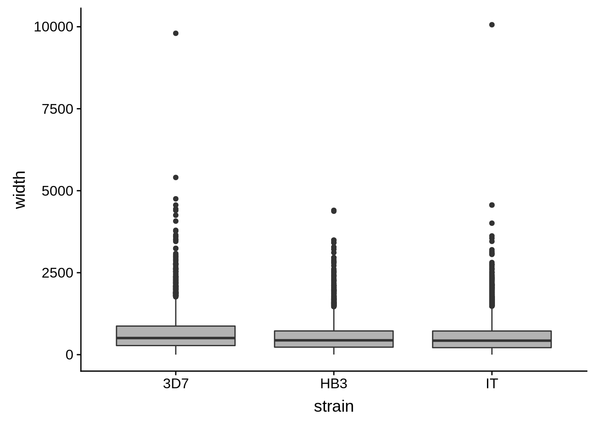
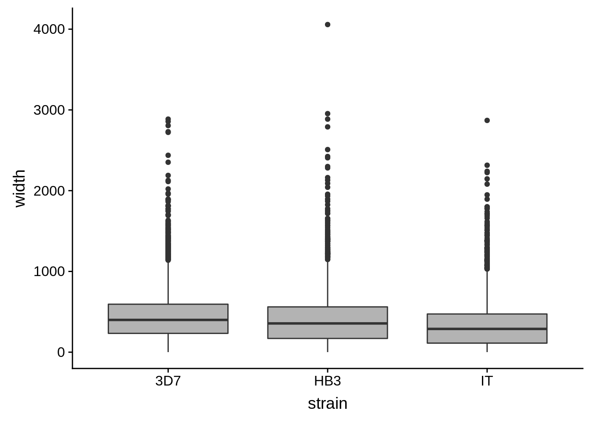
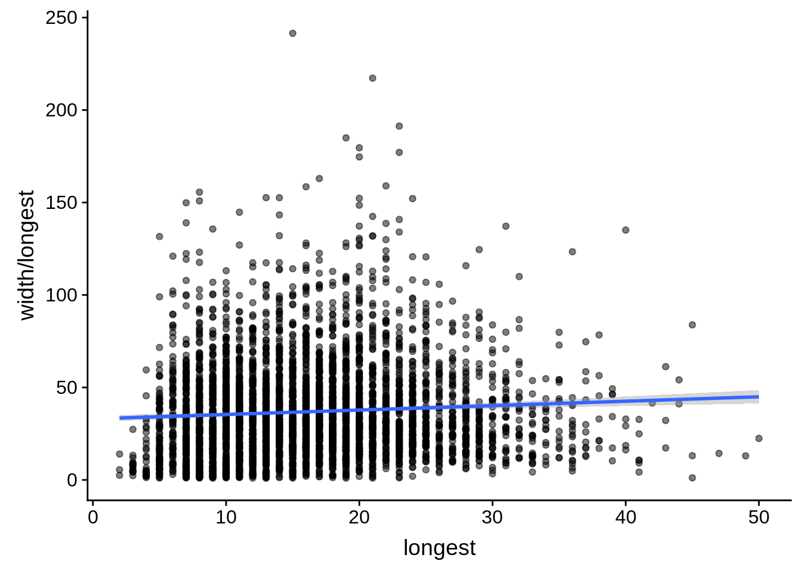

Make final UTRs
Philipp Ross
2018-09-25
Last updated: 2018-10-24
workflowr checks: (Click a bullet for more information)-
✖ R Markdown file: uncommitted changes
The R Markdown file has unstaged changes. To know which version of the R Markdown file created these results, you’ll want to first commit it to the Git repo. If you’re still working on the analysis, you can ignore this warning. When you’re finished, you can runwflow_publishto commit the R Markdown file and build the HTML. -
✔ Environment: empty
Great job! The global environment was empty. Objects defined in the global environment can affect the analysis in your R Markdown file in unknown ways. For reproduciblity it’s best to always run the code in an empty environment.
-
✔ Seed:
set.seed(12345)The command
set.seed(12345)was run prior to running the code in the R Markdown file. Setting a seed ensures that any results that rely on randomness, e.g. subsampling or permutations, are reproducible. -
✔ Session information: recorded
Great job! Recording the operating system, R version, and package versions is critical for reproducibility.
-
Great! You are using Git for version control. Tracking code development and connecting the code version to the results is critical for reproducibility. The version displayed above was the version of the Git repository at the time these results were generated.✔ Repository version: dd9d56a
Note that you need to be careful to ensure that all relevant files for the analysis have been committed to Git prior to generating the results (you can usewflow_publishorwflow_git_commit). workflowr only checks the R Markdown file, but you know if there are other scripts or data files that it depends on. Below is the status of the Git repository when the results were generated:
Note that any generated files, e.g. HTML, png, CSS, etc., are not included in this status report because it is ok for generated content to have uncommitted changes.Ignored files: Ignored: .Rhistory Ignored: .Rproj.user/ Ignored: analysis/.DS_Store Ignored: analysis/.httr-oauth Ignored: code/.DS_Store Ignored: code/differential_expression/ Ignored: code/differential_phase/ Ignored: data/ Ignored: docs/.DS_Store Ignored: docs/figure/.DS_Store Ignored: docs/figure/neighboring_genes.Rmd/.DS_Store Ignored: output/ctss_clustering/ Ignored: output/differential_detection/ Ignored: output/differential_expression/ Ignored: output/differential_phase/ Ignored: output/extensive_transcription/ Ignored: output/final_utrs/ Ignored: output/gcbias/ Ignored: output/homopolymer_analysis/ Ignored: output/neighboring_genes/ Ignored: output/promoter_architecture/ Ignored: output/tfbs_analysis/ Ignored: output/transcript_abundance/ Untracked files: Untracked: _workflowr.yml Untracked: figures/ Unstaged changes: Modified: README.md Modified: analysis/_site.yml Modified: analysis/about.Rmd Modified: analysis/analyze_neighboring_genes.Rmd Modified: analysis/array_correlations.Rmd Modified: analysis/calculate_transcript_abundance.Rmd Deleted: analysis/chunks.R Modified: analysis/comparing_utrs.Rmd Modified: analysis/ctss_clustering.Rmd Modified: analysis/dynamic_tss.Rmd Modified: analysis/extensive_transcription.Rmd Modified: analysis/final_utrs.Rmd Modified: analysis/gcbias.Rmd Modified: analysis/index.Rmd Modified: analysis/license.Rmd Modified: analysis/process_neighboring_genes.Rmd Modified: analysis/promoter_architecture.Rmd Modified: analysis/strain_differential_detection.Rmd Modified: analysis/strain_differential_expression.Rmd Modified: analysis/strain_differential_phase.Rmd Modified: analysis/tfbs_analysis.Rmd Deleted: docs/Rplots.pdf
Expand here to see past versions:
| File | Version | Author | Date | Message |
|---|---|---|---|---|
| Rmd | fa4fca8 | Philipp Ross | 2018-09-25 | added homopolymer analysis |
| html | fa4fca8 | Philipp Ross | 2018-09-25 | added homopolymer analysis |
| Rmd | 1e6d9bb | Philipp Ross | 2018-09-24 | comparing UTRs |
| Rmd | f59e2e3 | Philipp Ross | 2018-09-22 | hellooooo |
| html | f59e2e3 | Philipp Ross | 2018-09-22 | hellooooo |
Making final/longest UTRs
There were several methods and data sets used to predict 5’ and 3’ UTRs.
The first method was using the RNA-seq data sets and continuous read coverage. Any continuous coverage found surrounding known transcripts that met a read threshold cutoff of 5 reads or more was added as a UTR to the transcript from which it extended depending on whether it was on the 5’ or 3’ end of the transcript. This was done for each strain inidividually.
The second method to predict 5’ UTRs was done by using a variant of nanoCAGE in order to tag the extreme ends of mRNA molecules and sequence them along with a synthetic oligo used for the pull down of these extreme ends. No 3’ UTRs of transcripts was predicted using this approach although both ends were tagged.
Finally, the 5’ mRNA capture data was used to correct 5’ UTR predictions in all strains IF there was coverage support from the RNA-seq data in that loci where the capture data predicted it to be. If there was no prediction based on the 5’ capture data, then coverage from the 3D7 strain was used to “repair” the 5’ UTRs as well.
These predictions were all combined into lists of “longest possible transcripts” for each strain. Priority was given to predictions:
- 5’ mRNA capture prediction
- 5’ mRNA capture prediction used to repair the coverage prediction
- 3D7 coverage repaired UTRs
- Original RNA-seq UTR predictions
# 3D7
Rscript scripts/create_final_utrs.R \
../data/utrs/repaired_cov_utrs/repaired_with_TSO_5UTRs/repaired_with_tso_5UTRs.3d7.filtered.rescued_5utrs.gff \
../data/utrs/repaired_cov_utrs/repaired_with_3D7_coverage_5UTRs/repaired_with_3d7_cov_5UTRs.3d7.filtered.rescued_5utrs.gff \
../data/utrs/original_utrs/final.5utrs.3d7.3d7_v3_chr.idc.gff \
../data/utrs/original_utrs/tso_thr5.gff \
../data/utrs/original_utrs/final.3utrs.3d7.3d7_v3_chr.idc.gff \
TRUE \
../output/final_utrs/final_utrs_3d7.gff
# HB3
Rscript scripts/create_final_utrs.R \
../data/utrs/repaired_cov_utrs/repaired_with_TSO_5UTRs/repaired_with_tso_5UTRs.hb3.filtered.rescued_5utrs.gff \
../data/utrs/repaired_cov_utrs/repaired_with_3D7_coverage_5UTRs/repaired_with_3d7_cov_5UTRs.hb3.filtered.rescued_5utrs.gff \
../data/utrs/original_utrs/final.5utrs.hb3.3d7_v3_chr.idc.gff \
../data/utrs/original_utrs/tso_thr5.gff \
../data/utrs/original_utrs/final.3utrs.hb3.3d7_v3_chr.idc.gff \
TRUE \
../output/final_utrs/final_utrs_hb3.gff
#IT
Rscript scripts/create_final_utrs.R \
../data/utrs/repaired_cov_utrs/repaired_with_TSO_5UTRs/repaired_with_tso_5UTRs.it.filtered.rescued_5utrs.gff \
../data/utrs/repaired_cov_utrs/repaired_with_3D7_coverage_5UTRs/repaired_with_3d7_cov_5UTRs.it.filtered.rescued_5utrs.gff \
../data/utrs/original_utrs/final.5utrs.it.3d7_v3_chr.idc.gff \
../data/utrs/original_utrs/tso_thr5.gff \
../data/utrs/original_utrs/final.3utrs.it.3d7_v3_chr.idc.gff \
TRUE \
../output/final_utrs/final_utrs_it.gffFinally, we should read in the resulting data:
# function to read in the data
read_utrs <- function(file, input_strain) {
df <- tibble::as_tibble(rtracklayer::import.gff3(file)) %>%
dplyr::select(Parent,type,width)
df$strain <- input_strain
df$Parent <- as.character(df$Parent)
return(df)
}
utrs3d7 <- read_utrs("../output/final_utrs/longest_utrs_3d7_plasmodb_compatible.gff", "3D7")
utrshb3 <- read_utrs("../output/final_utrs/longest_utrs_hb3_plasmodb_compatible.gff", "HB3")
utrsit <- read_utrs("../output/final_utrs/longest_utrs_it_plasmodb_compatible.gff", "IT")
utrs <- rbind(utrs3d7,utrshb3,utrsit)5’ UTRs
What does the distribution of 5’ UTRs look like?
utrs %>%
dplyr::filter(type == "5UTR") %>%
ggplot(aes(x=width)) +
geom_histogram(color="grey90",bins=30) +
facet_grid(.~strain) +
theme(axis.text.x = element_text(angle = 55, hjust = 1))
Expand here to see past versions of 5utrs-hist-1.png:
| Version | Author | Date |
|---|---|---|
| fa4fca8 | Philipp Ross | 2018-09-25 |
| f59e2e3 | Philipp Ross | 2018-09-22 |
utrs %>%
dplyr::filter(type == "5UTR") %>%
ggplot(aes(x=strain,y=width)) +
geom_boxplot(fill="grey70")
Expand here to see past versions of 5utrs-boxplots-1.png:
| Version | Author | Date |
|---|---|---|
| fa4fca8 | Philipp Ross | 2018-09-25 |
| f59e2e3 | Philipp Ross | 2018-09-22 |
How do summary statistics vary between strains?
utrs %>%
dplyr::filter(type == "5UTR") %>%
dplyr::group_by(strain) %>%
dplyr::summarise(mean=mean(width),median=median(width),sd=sd(width))# A tibble: 3 x 4
strain mean median sd
<chr> <dbl> <dbl> <dbl>
1 3D7 663. 507 591.
2 HB3 541. 438 458.
3 IT 541. 428 499.3’ UTRs
What does the distribution of 3’ UTRs look like?
utrs %>%
dplyr::filter(type == "3UTR") %>%
ggplot(aes(x=width)) +
geom_histogram(color="grey90",bins=30) +
facet_grid(.~strain) +
theme(axis.text.x = element_text(angle = 55, hjust = 1))Expand here to see past versions of 3utrs-hist-1.png:
| Version | Author | Date |
|---|---|---|
| fa4fca8 | Philipp Ross | 2018-09-25 |
| f59e2e3 | Philipp Ross | 2018-09-22 |
utrs %>%
dplyr::filter(type == "3UTR") %>%
ggplot(aes(x=strain,y=width)) +
geom_boxplot(fill="grey70")
Expand here to see past versions of 3utrs-boxplots-1.png:
| Version | Author | Date |
|---|---|---|
| fa4fca8 | Philipp Ross | 2018-09-25 |
| f59e2e3 | Philipp Ross | 2018-09-22 |
How do summary statistics vary between strains?
utrs %>%
dplyr::filter(type == "3UTR") %>%
dplyr::group_by(strain) %>%
dplyr::summarise(mean=mean(width),median=median(width),sd=sd(width))# A tibble: 3 x 4
strain mean median sd
<chr> <dbl> <dbl> <dbl>
1 3D7 454. 400. 325.
2 HB3 411. 356 330.
3 IT 335. 288 284.Homopolymer analysis
One thing we were also interested in looking at was why the coverage UTRs some times suffered from “coverage drops”. If we assume that the AT content of the genome isn’t as much of an issue anymore now that we are using PCR-free library preparation and better priming of RNA molecules, then one other issue that could be causing these coverage drops are homopolymer tracts. Another reason we are making this assumption is because the CAGE tags support this conclusion. Where the 5’ UTR often falls short, there is a lack of supporting CAGE tags. If we look upstream, however, we can see CAGE tags AND coverage if we look at the DAFT-seq data.
In the current analysis, I’m forgetting to take into account introns when looking for the presence of long homopolymer tracts within predicted UTRs. Important questions include:
- Do long homopolymer tracts exist within prediced coverage UTRs?
- Are UTRs containing long homopolymer tracts on average shorter than those that don’t?
To address these questions, I extended 5’ UTRs 100 base pairs beyond their predicted coverage-based TSS, counted the length of the longest homopolymer tract for each nucleotide, and looked whether longer homopolymer tracts tend to occur in UTRs that are shorter.
First let’s make 3D7 5UTR sequences for the analysis:
cat ../data/original_utrs/final.5utrs.3d7.3d7_v3_chr.idc.gff |
awk 'BEGIN {{OFS=FS=\"\t\"}} {{split($9,X,\";\"); split(X[1],Y,\"=\"); print $1,$4-1,$5,Y[2],$5-$4+1,$7}}' |
bedtools getfasta -fi ../data/genomes/pf3d7/PlasmoDB-24_Pfalciparum3D7_Genome.fasta -bed - -fo output/homopolymer_analysis/3d7_5utrs.fasta -s -name
bedtools flank -i ../data/original_utrs/final.5utrs.3d7.3d7_v3_chr.idc.gff -g ../data/genomes/pf3d7/PlasmoDB-24_Pfalciparum3D7_Genome.lengths -s -l 100 -r 0 |
awk 'BEGIN {{OFS=FS=\"\t\"}} {{split($9,X,\";\"); split(X[1],Y,\"=\"); print $1,$4-1,$5,Y[2],$5-$4+1,$7}}' |
bedtools getfasta -fi ../data/genomes/pf3d7/PlasmoDB-24_Pfalciparum3D7_Genome.fasta -bed - -fo ../output/homopolymer_analysis/minus_100bp_flank_3d7_5utrs.fasta -s -name
bedtools slop -i ../data/original_utrs/final.5utrs.3d7.3d7_v3_chr.idc.gff -g ../data/genomes/pf3d7/PlasmoDB-24_Pfalciparum3D7_Genome.lengths -s -l 100 -r 0 |
awk 'BEGIN {{OFS=FS=\"\t\"}} {{split($9,X,\";\"); split(X[1],Y,\"=\"); print $1,$4-1,$5,Y[2],$5-$4+1,$7}}' |
bedtools getfasta -fi ../data/genomes/pf3d7/PlasmoDB-24_Pfalciparum3D7_Genome.fasta -bed - -fo ../output/homopolymer_analysis/minus_100bp_slop_3d7_5utrs.fasta -s -nameNow let’s count the number of homopolymers:
Rscript ../code/scripts/final_utrs/count_homopolymers.R -f ../output/homopolymer_analysis/minus_100bp_flank_3d7_5utrs.fasta -l 50 -o ../output/homopolymer_analysis/minus_100bp_flank_3d7_5utrs_counts.tsv
Rscript ../code/scripts/final_utrs/count_homopolymers.R -f ../output/homopolymer_analysis/minus_100bp_slop_3d7_5utrs.fasta -l 50 -o ../output/homopolymer_analysis/minus_100bp_slop_3d7_5utrs_counts.tsv
Rscript ../code/scripts/final_utrs/count_homopolymers.R -f ../output/homopolymer_analysis/3d7_5utrs.fasta -l 50 -o ../output/homopolymer_analysis/3d7_5utrs.fasta_counts.tsvNow import that data:
utrplus <- readr::read_tsv("../output/homopolymer_analysis/minus_100bp_slop_3d7_5utrs_counts.tsv") # UTR plus 100bp upstream
plus<- readr::read_tsv("../output/homopolymer_analysis/minus_100bp_flank_3d7_5utrs_counts.tsv") # only 100 bp upstream of UTR
utrs <- readr::read_tsv("../output/homopolymer_analysis/3d7_5utrs_counts.tsv") # only UTR
originalutrs <- tibble::as_tibble(rtracklayer::import.gff3("../data/utrs/original_utrs/final.5utrs.3d7.3d7_v3_chr.idc.gff"))
originalutrs$Parent <- as.character(originalutrs$Parent)
fixedutrs <- tibble::as_tibble(rtracklayer::import.gff3("../output/final_utrs/final_utrs_3d7.gff")) %>%
dplyr::filter(length_added > 0)
fixedutrs$Parent <- as.character(fixedutrs$Parent)And now plot the data:
tmp <- dplyr::inner_join(originalutrs, utrplus, by = c("Parent" = "gene_id"))
g <- tmp %>%
dplyr::group_by(Parent) %>%
dplyr::summarise(width=unique(width),longest=max(longest)) %>%
ggplot(aes(y=width/longest,x=longest)) +
geom_point(alpha=0.25,color="black") +
stat_smooth(method="lm",color="red") +
ylab("Normalized Length") +
xlab("Longest Homopolymer") +
ggtitle("All UTRs Plus 100 bps")
cowplot::save_plot("../output/final_utrs/utrplus_homopolymers.png",g)
cowplot::save_plot("../output/final_utrs/utrplus_homopolymers.svg",g)
print(g)Expand here to see past versions of unnamed-chunk-6-1.png:
| Version | Author | Date |
|---|---|---|
| fa4fca8 | Philipp Ross | 2018-09-25 |
tmp %>%
dplyr::group_by(Parent) %>%
dplyr::summarise(width=unique(width),longest=max(longest)) %>%
dplyr::do(broom::tidy(cor.test(.$width/.$longest,.$longest)))# A tibble: 1 x 8
estimate statistic p.value parameter conf.low conf.high method
<dbl> <dbl> <dbl> <int> <dbl> <dbl> <chr>
1 -0.335 -23.5 2.33e-115 4386 -0.361 -0.308 Pears…
# ... with 1 more variable: alternative <chr>tmp <- dplyr::inner_join(originalutrs, plus, by = c("Parent" = "gene_id"))
g <- tmp %>%
dplyr::filter(width < 8000) %>%
dplyr::group_by(Parent) %>%
dplyr::summarise(width=unique(width),longest=max(longest)) %>%
ggplot(aes(y=width,x=longest)) + geom_point(alpha=0.5) + stat_smooth(method="lm")
cowplot::save_plot("../output/final_utrs/plus_homopolymers.png",g)
cowplot::save_plot("../output/final_utrs/plus_homopolymers.svg",g)
print(g)Expand here to see past versions of unnamed-chunk-7-1.png:
| Version | Author | Date |
|---|---|---|
| fa4fca8 | Philipp Ross | 2018-09-25 |
tmp %>%
#dplyr::filter(width < 8000) %>%
dplyr::group_by(Parent) %>%
dplyr::summarise(width=unique(width),longest=max(longest)) %>%
dplyr::do(broom::tidy(cor.test(.$width,.$longest)))# A tibble: 1 x 8
estimate statistic p.value parameter conf.low conf.high method
<dbl> <dbl> <dbl> <int> <dbl> <dbl> <chr>
1 -0.174 -11.7 4.58e-31 4386 -0.202 -0.145 Pears…
# ... with 1 more variable: alternative <chr>tmp <- dplyr::inner_join(originalutrs, utrs, by = c("Parent" = "gene_id"))
g <- tmp %>%
dplyr::filter(width < 8000) %>%
dplyr::group_by(Parent) %>%
dplyr::summarise(width=unique(width),longest=max(longest)) %>%
ggplot(aes(y=width/longest,x=longest)) + geom_point(alpha=0.5) + stat_smooth(method="lm")
cowplot::save_plot("../output/final_utrs/utr_homopolymers.png",g)
cowplot::save_plot("../output/final_utrs/utr_homopolymers.svg",g)
print(g)
Expand here to see past versions of unnamed-chunk-8-1.png:
| Version | Author | Date |
|---|---|---|
| fa4fca8 | Philipp Ross | 2018-09-25 |
tmp %>%
#dplyr::filter(width < 8000) %>%
dplyr::group_by(Parent) %>%
dplyr::summarise(width=unique(width),longest=max(longest)) %>%
dplyr::do(broom::tidy(cor.test(.$width/.$longest,.$longest)))# A tibble: 1 x 8
estimate statistic p.value parameter conf.low conf.high method
<dbl> <dbl> <dbl> <int> <dbl> <dbl> <chr>
1 0.0662 4.39 1.15e-5 4383 0.0367 0.0956 Pears…
# ... with 1 more variable: alternative <chr>tmp <- dplyr::inner_join(fixedutrs, utrplus, by = c("Parent" = "gene_id"))
g <- tmp %>%
dplyr::group_by(Parent) %>%
dplyr::summarise(width=unique(width),longest=max(longest)) %>%
ggplot(aes(y=width/longest,x=longest)) +
geom_point(alpha=0.25,color="black") +
stat_smooth(method="lm",color="red") +
ylab("Normalized Length") +
xlab("Longest Homopolymer") +
ggtitle("Fixed UTRs")
cowplot::save_plot("../output/final_utrs/fixedutr_homopolymers.png",g)
cowplot::save_plot("../output/final_utrs/fixedutr_homopolymers.svg",g)
print(g)tmp %>%
dplyr::group_by(Parent) %>%
dplyr::summarise(width=unique(width),longest=max(longest)) %>%
dplyr::do(broom::tidy(cor.test(.$width/.$longest,.$longest)))# A tibble: 1 x 8
estimate statistic p.value parameter conf.low conf.high method
<dbl> <dbl> <dbl> <int> <dbl> <dbl> <chr>
1 -0.320 -16.2 4.10e-56 2299 -0.357 -0.283 Pears…
# ... with 1 more variable: alternative <chr>Session information
R version 3.5.0 (2018-04-23)
Platform: x86_64-pc-linux-gnu (64-bit)
Running under: Gentoo/Linux
Matrix products: default
BLAS: /usr/local/lib64/R/lib/libRblas.so
LAPACK: /usr/local/lib64/R/lib/libRlapack.so
locale:
[1] LC_CTYPE=en_US.UTF-8 LC_NUMERIC=C
[3] LC_TIME=en_US.UTF-8 LC_COLLATE=en_US.UTF-8
[5] LC_MONETARY=en_US.UTF-8 LC_MESSAGES=en_US.UTF-8
[7] LC_PAPER=en_US.UTF-8 LC_NAME=C
[9] LC_ADDRESS=C LC_TELEPHONE=C
[11] LC_MEASUREMENT=en_US.UTF-8 LC_IDENTIFICATION=C
attached base packages:
[1] parallel stats4 stats graphics grDevices utils datasets
[8] methods base
other attached packages:
[1] gdtools_0.1.7
[2] bindrcpp_0.2.2
[3] BSgenome.Pfalciparum.PlasmoDB.v24_1.0
[4] BSgenome_1.48.0
[5] rtracklayer_1.40.6
[6] Biostrings_2.48.0
[7] XVector_0.20.0
[8] GenomicRanges_1.32.7
[9] GenomeInfoDb_1.16.0
[10] org.Pf.plasmo.db_3.6.0
[11] AnnotationDbi_1.42.1
[12] IRanges_2.14.12
[13] S4Vectors_0.18.3
[14] Biobase_2.40.0
[15] BiocGenerics_0.26.0
[16] scales_1.0.0
[17] cowplot_0.9.3
[18] magrittr_1.5
[19] forcats_0.3.0
[20] stringr_1.3.1
[21] dplyr_0.7.6
[22] purrr_0.2.5
[23] readr_1.1.1
[24] tidyr_0.8.1
[25] tibble_1.4.2
[26] ggplot2_3.0.0
[27] tidyverse_1.2.1
loaded via a namespace (and not attached):
[1] nlme_3.1-137 bitops_1.0-6
[3] matrixStats_0.54.0 lubridate_1.7.4
[5] bit64_0.9-7 httr_1.3.1
[7] rprojroot_1.3-2 tools_3.5.0
[9] backports_1.1.2 utf8_1.1.4
[11] R6_2.3.0 DBI_1.0.0
[13] lazyeval_0.2.1 colorspace_1.3-2
[15] withr_2.1.2 tidyselect_0.2.4
[17] bit_1.1-14 compiler_3.5.0
[19] git2r_0.23.0 cli_1.0.1
[21] rvest_0.3.2 xml2_1.2.0
[23] DelayedArray_0.6.6 labeling_0.3
[25] digest_0.6.17 Rsamtools_1.32.3
[27] svglite_1.2.1 rmarkdown_1.10
[29] R.utils_2.7.0 pkgconfig_2.0.2
[31] htmltools_0.3.6 rlang_0.2.2
[33] readxl_1.1.0 rstudioapi_0.8
[35] RSQLite_2.1.1 bindr_0.1.1
[37] jsonlite_1.5 BiocParallel_1.14.2
[39] R.oo_1.22.0 RCurl_1.95-4.11
[41] GenomeInfoDbData_1.1.0 Matrix_1.2-14
[43] fansi_0.3.0 Rcpp_0.12.19
[45] munsell_0.5.0 R.methodsS3_1.7.1
[47] stringi_1.2.4 whisker_0.3-2
[49] yaml_2.2.0 SummarizedExperiment_1.10.1
[51] zlibbioc_1.26.0 plyr_1.8.4
[53] grid_3.5.0 blob_1.1.1
[55] crayon_1.3.4 lattice_0.20-35
[57] haven_1.1.2 hms_0.4.2
[59] knitr_1.20 pillar_1.3.0
[61] reshape2_1.4.3 XML_3.98-1.16
[63] glue_1.3.0 evaluate_0.11
[65] modelr_0.1.2 cellranger_1.1.0
[67] gtable_0.2.0 assertthat_0.2.0
[69] broom_0.5.0 GenomicAlignments_1.16.0
[71] memoise_1.1.0 workflowr_1.1.1
This reproducible R Markdown analysis was created with workflowr 1.1.1